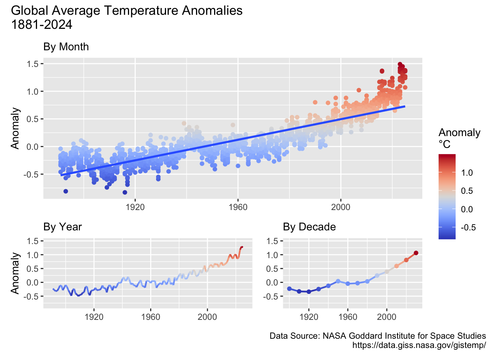
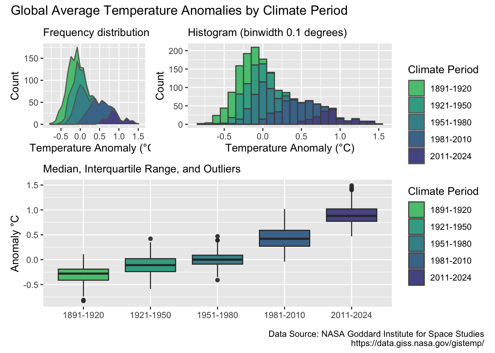
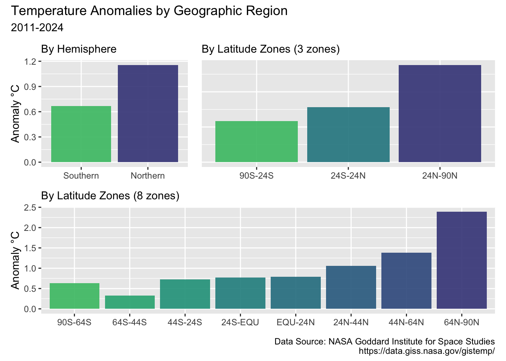
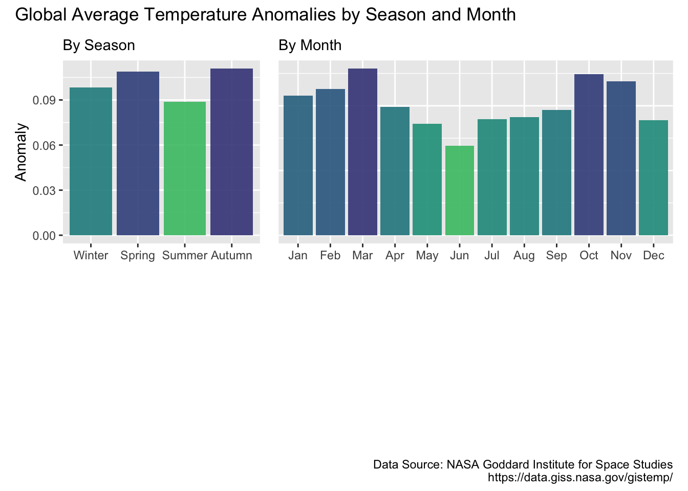

flowchart LR A(Import) --> B(Tidy) --> C(Transform) --> D(Visualize)
Analysis of Global Temperature Anomalies (using R)
Data
This analyis will use the following surface temperature anomaly data (1880 until present):
- Monthly average temperatures
- Global
- Northern Hemisphere
- Southern Hemisphere
- Annual average temperatures
- Latitude zones
The data is retrieved from The NASA Goddard Institue for Space Studies website https://data.giss.nasa.gov/gistemp/
Process
This analyis will use these data analyis steps:
The skills used in this analysis have been learned from the book “R for Data Science (2e)”, written by Hadley Wickham, Mine Çetinkaya-Rundel, and Garrett Grolemund. https://r4ds.hadley.nz
Packages
library(tidyverse)
library(viridis)
library(paletteer)
library(patchwork)1 Import
Paths
csv_url = "https://data.giss.nasa.gov/gistemp/tabledata_v4/"
csv_file_names <- c("GLB.Ts+dSST.csv",
"NH.Ts+dSST.csv",
"SH.Ts+dSST.csv",
"ZonAnn.Ts+dSST.csv")df_list <- list()
skip_header_recs <- c(1, 1, 1, 0)
for (i in 1:length(csv_file_names)) {
csv_file_path <- paste(csv_url, csv_file_names[i], sep = "")
csv_save_path <- file.path("data", "raw", "tabular", csv_file_names[i])
df <- read_csv(file=csv_file_path,
skip=skip_header_recs[i],
na = "***",
show_col_types = FALSE)
df_list[[i]] <- df
}
df1 <-df_list[[1]]
df2 <-df_list[[2]]
df3 <-df_list[[3]]
df4 <-df_list[[4]]glimpse(df1)Rows: 146
Columns: 19
$ Year <dbl> 1880, 1881, 1882, 1883, 1884, 1885, 1886, 1887, 1888, 1889, 1890…
$ Jan <dbl> -0.20, -0.20, 0.16, -0.29, -0.13, -0.59, -0.44, -0.72, -0.34, -0…
$ Feb <dbl> -0.25, -0.15, 0.13, -0.37, -0.08, -0.34, -0.51, -0.58, -0.36, 0.…
$ Mar <dbl> -0.09, 0.02, 0.04, -0.12, -0.36, -0.27, -0.43, -0.36, -0.41, 0.0…
$ Apr <dbl> -0.16, 0.04, -0.16, -0.19, -0.40, -0.42, -0.28, -0.35, -0.20, 0.…
$ May <dbl> -0.09, 0.06, -0.14, -0.18, -0.34, -0.45, -0.25, -0.31, -0.22, -0…
$ Jun <dbl> -0.22, -0.19, -0.23, -0.07, -0.35, -0.44, -0.35, -0.25, -0.17, -…
$ Jul <dbl> -0.20, 0.01, -0.16, -0.08, -0.31, -0.34, -0.18, -0.26, -0.10, -0…
$ Aug <dbl> -0.10, -0.04, -0.08, -0.14, -0.28, -0.31, -0.31, -0.36, -0.16, -…
$ Sep <dbl> -0.15, -0.16, -0.15, -0.22, -0.27, -0.28, -0.24, -0.26, -0.12, -…
$ Oct <dbl> -0.23, -0.22, -0.24, -0.12, -0.25, -0.24, -0.28, -0.36, 0.01, -0…
$ Nov <dbl> -0.23, -0.19, -0.17, -0.24, -0.34, -0.24, -0.28, -0.27, 0.03, -0…
$ Dec <dbl> -0.18, -0.07, -0.37, -0.11, -0.31, -0.10, -0.25, -0.33, -0.04, -…
$ `J-D` <dbl> -0.17, -0.09, -0.11, -0.18, -0.28, -0.34, -0.32, -0.37, -0.17, -…
$ `D-N` <dbl> NA, -0.10, -0.09, -0.20, -0.27, -0.35, -0.30, -0.36, -0.20, -0.0…
$ DJF <dbl> NA, -0.18, 0.07, -0.34, -0.11, -0.41, -0.35, -0.52, -0.35, 0.01,…
$ MAM <dbl> -0.11, 0.04, -0.09, -0.16, -0.37, -0.38, -0.32, -0.34, -0.28, 0.…
$ JJA <dbl> -0.17, -0.07, -0.16, -0.10, -0.31, -0.36, -0.28, -0.29, -0.14, -…
$ SON <dbl> -0.20, -0.19, -0.19, -0.19, -0.29, -0.25, -0.27, -0.30, -0.03, -…glimpse(df4)Rows: 145
Columns: 15
$ Year <dbl> 1880, 1881, 1882, 1883, 1884, 1885, 1886, 1887, 1888, 1889, …
$ Glob <dbl> -0.17, -0.09, -0.11, -0.18, -0.28, -0.34, -0.32, -0.37, -0.1…
$ NHem <dbl> -0.31, -0.20, -0.23, -0.30, -0.44, -0.45, -0.45, -0.45, -0.2…
$ SHem <dbl> -0.04, 0.01, 0.00, -0.06, -0.14, -0.24, -0.19, -0.28, -0.11,…
$ `24N-90N` <dbl> -0.41, -0.38, -0.33, -0.37, -0.62, -0.67, -0.58, -0.54, -0.4…
$ `24S-24N` <dbl> -0.12, 0.10, -0.05, -0.17, -0.15, -0.13, -0.20, -0.30, 0.10,…
$ `90S-24S` <dbl> -0.01, -0.06, 0.02, -0.01, -0.13, -0.27, -0.21, -0.28, -0.28…
$ `64N-90N` <dbl> -0.83, -0.94, -1.43, -0.20, -1.32, -1.53, -1.61, -1.78, -1.3…
$ `44N-64N` <dbl> -0.51, -0.49, -0.31, -0.59, -0.66, -0.71, -0.53, -0.54, -0.4…
$ `24N-44N` <dbl> -0.32, -0.23, -0.16, -0.28, -0.48, -0.47, -0.41, -0.31, -0.2…
$ `EQU-24N` <dbl> -0.16, 0.09, -0.06, -0.19, -0.14, -0.08, -0.22, -0.31, 0.06,…
$ `24S-EQU` <dbl> -0.09, 0.12, -0.04, -0.14, -0.16, -0.19, -0.17, -0.29, 0.15,…
$ `44S-24S` <dbl> -0.03, -0.04, 0.02, -0.03, -0.18, -0.33, -0.19, -0.27, -0.30…
$ `64S-44S` <dbl> 0.05, -0.07, 0.04, 0.07, -0.02, -0.15, -0.20, -0.26, -0.22, …
$ `90S-64S` <dbl> 0.68, 0.61, 0.64, 0.51, 0.66, 0.83, 0.60, 0.33, 0.17, 0.46, …2 Tidy
fn_tidy <- function(df, pivot_col, pivot_name) {
sel_cols <- c("Year", pivot_cols)
dft <- df |>
select(all_of(sel_cols)) |>
pivot_longer(
cols=all_of(pivot_cols),
names_to = pivot_name,
values_to = "Anomaly",
values_drop_na = TRUE)
return(dft)
}pivot_name <- "Month"
pivot_cols <- colnames(df1[,2:13])
df1_tidy <- fn_tidy(df1, pivot_cols, pivot_name)
df2_tidy <- fn_tidy(df2, pivot_cols, pivot_name)
df3_tidy <- fn_tidy(df3, pivot_cols, pivot_name)
pivot_name <- "Zone"
pivot_cols <- colnames(df4[,5:15])
df4_tidy <- fn_tidy(df4, pivot_cols, pivot_name)
head(df1_tidy)# A tibble: 6 × 3
Year Month Anomaly
<dbl> <chr> <dbl>
1 1880 Jan -0.2
2 1880 Feb -0.25
3 1880 Mar -0.09
4 1880 Apr -0.16
5 1880 May -0.09
6 1880 Jun -0.22head(df4_tidy)# A tibble: 6 × 3
Year Zone Anomaly
<dbl> <chr> <dbl>
1 1880 24N-90N -0.41
2 1880 24S-24N -0.12
3 1880 90S-24S -0.01
4 1880 64N-90N -0.83
5 1880 44N-64N -0.51
6 1880 24N-44N -0.323 Transform
Factors
climate_levels <- c("1891-1920", "1921-1950", "1951-1980",
"1981-2010", "2011-2024")
month_codes <- c("Jan", "Feb", "Mar", "Apr", "May", "Jun",
"Jul", "Aug", "Sep", "Oct", "Nov", "Dec")
season_levels <- c("Winter","Spring","Summer","Autumn")
hemisphere_levels <- c("S","N")
hemisphere_labels <- c("Southern", "Northern")
zone_x3_levels <- c( "90S-24S", "24S-24N", "24N-90N")
zone_x8_levels <- c( "90S-64S", "64S-44S", "44S-24S", "24S-EQU",
"EQU-24N", "24N-44N", "44N-64N", "64N-90N")3.1 Transform global, northern and southern data frames
Function to determine climate period
fn_add_climate_period <- function(df) {
# add 30 year climate identifier variable based on year
# change climate variable to factor and add labels
dfc <- df |>
mutate(Period = case_when(
Year <= 1920 ~ climate_levels[1],
Year <= 1950 ~ climate_levels[2],
Year <= 1980 ~ climate_levels[3],
Year <= 2010 ~ climate_levels[4],
Year <= 2040 ~ climate_levels[5]))
dfc$Period <- factor(dfc$Period,
levels=climate_levels,
labels=climate_levels)
return(dfc)
} Function to add identifier column, remove missing values, add factors
fn_transform_monthly <- function(df, id) {
dft <- df |>
filter(Year > 1890) |>
mutate(Identifier = id) |>
mutate(Identifier = factor(Identifier)) |>
mutate(Year = as.integer(Year)) |>
mutate(Decade = as.integer(Year - (Year %% 10) + 10))
dft$Month <- factor(dft$Month, levels=month_codes)
dfc <- fn_add_climate_period(dft) |>
select(Identifier, Period, Decade, Year, Month, Anomaly)
return(dfc)
}global_monthly_df <- fn_transform_monthly(df1_tidy,id="G")
northern_monthly_df <- fn_transform_monthly(df2_tidy,id="N")
southern_monthly_df <- fn_transform_monthly(df3_tidy,id="S")head(global_monthly_df,1)# A tibble: 1 × 6
Identifier Period Decade Year Month Anomaly
<fct> <fct> <int> <int> <fct> <dbl>
1 G 1891-1920 1900 1891 Jan -0.34head(northern_monthly_df,1)# A tibble: 1 × 6
Identifier Period Decade Year Month Anomaly
<fct> <fct> <int> <int> <fct> <dbl>
1 N 1891-1920 1900 1891 Jan -0.48head(southern_monthly_df,1)# A tibble: 1 × 6
Identifier Period Decade Year Month Anomaly
<fct> <fct> <int> <int> <fct> <dbl>
1 S 1891-1920 1900 1891 Jan -0.21hemisphere_monthly_df <- dplyr::bind_rows(northern_monthly_df, southern_monthly_df)Functions to determine season based on hemisphere
fn_add_season <- function(df) {
dfs <- df |>
rename(Hemisphere=Identifier) |>
mutate(Season = case_when(
(Hemisphere == "N" & Month %in% c("Dec","Jan","Feb")) ~ season_levels[1],
(Hemisphere == "N" & Month %in% c("Mar","Apr","May")) ~ season_levels[2],
(Hemisphere == "N" & Month %in% c("Jun","Jul","Aug")) ~ season_levels[3],
(Hemisphere == "N" & Month %in% c("Sep","Oct","Nov")) ~ season_levels[4],
(Hemisphere == "S" & Month %in% c("Jun","Jul","Aug")) ~ season_levels[1],
(Hemisphere == "S" & Month %in% c("Sep","Oct","Nov")) ~ season_levels[2],
(Hemisphere == "S" & Month %in% c("Dec","Jan","Feb")) ~ season_levels[3],
(Hemisphere == "S" & Month %in% c("Mar","Apr","May")) ~ season_levels[4]))
dfs$Hemisphere <- factor(dfs$Hemisphere,
levels=hemisphere_levels,
labels=hemisphere_labels)
dfs$Season <- factor(dfs$Season,
levels=season_levels)
return(dfs)
}hemisphere_monthly_df <- fn_add_season(hemisphere_monthly_df)
head(hemisphere_monthly_df,1)# A tibble: 1 × 7
Hemisphere Period Decade Year Month Anomaly Season
<fct> <fct> <int> <int> <fct> <dbl> <fct>
1 Northern 1891-1920 1900 1891 Jan -0.48 Wintertail(hemisphere_monthly_df,1)# A tibble: 1 × 7
Hemisphere Period Decade Year Month Anomaly Season
<fct> <fct> <int> <int> <fct> <dbl> <fct>
1 Southern 2011-2024 2030 2025 May 0.94 Autumn3.2 Transform zonal data frame
fn_transform_zonal <- function(df, id) {
dft <- df |>
filter(Year > 1890) |>
mutate(Year = as.integer(Year)) |>
mutate(Decade = as.integer(Year - (Year %% 10) + 10))
dfc <- fn_add_climate_period(dft) |>
select(Zone, Period, Decade, Year, Anomaly)
return(dfc)
}zonal_df <- fn_transform_zonal(df4_tidy)z_col_names = colnames(df4[,5:7])
z3_df <- zonal_df |>
filter(Zone %in% z_col_names)
z3_df$Zone <- factor(z3_df$Zone, levels=zone_x3_levels)
head(z3_df)# A tibble: 6 × 5
Zone Period Decade Year Anomaly
<fct> <fct> <int> <int> <dbl>
1 24N-90N 1891-1920 1900 1891 -0.44
2 24S-24N 1891-1920 1900 1891 -0.08
3 90S-24S 1891-1920 1900 1891 -0.21
4 24N-90N 1891-1920 1900 1892 -0.45
5 24S-24N 1891-1920 1900 1892 -0.31
6 90S-24S 1891-1920 1900 1892 -0.07z_col_names = colnames(df4[,8:15])
z8_df <- zonal_df |>
filter(Zone %in% z_col_names)
z8_df$Zone <- factor(z8_df$Zone, levels=zone_x8_levels)
head(z8_df)# A tibble: 6 × 5
Zone Period Decade Year Anomaly
<fct> <fct> <int> <int> <dbl>
1 64N-90N 1891-1920 1900 1891 -1.12
2 44N-64N 1891-1920 1900 1891 -0.35
3 24N-44N 1891-1920 1900 1891 -0.37
4 EQU-24N 1891-1920 1900 1891 -0.01
5 24S-EQU 1891-1920 1900 1891 -0.16
6 44S-24S 1891-1920 1900 1891 -0.174 Visualize
4.1 Plot parameters
plot_caption <- "Data Source: NASA Goddard Institute for Space Studies\nhttps://data.giss.nasa.gov/gistemp/"
plot_transparency <- 0.9
scale_option <- "D"
scale_direction <- -1
scale_beg <- 0.2
scale_end <- 0.74.2 Time Series
Code
palette <- "pals::coolwarm"
y_limits <- c(min(global_monthly_df$Anomaly),
max(global_monthly_df$Anomaly))
layout <- "
AAAAA
AAAAA
BBBCC
"
p1 <- ggplot(global_monthly_df, aes(x=Year, y = Anomaly)) +
geom_point(aes(color = Anomaly)) +
ylim(y_limits ) +
scale_color_paletteer_c(palette=palette, direction = 1) +
geom_smooth(method = "lm") +
labs(subtitle = "By Month",
y = "Anomaly",
color = "Anomaly\n°C") +
theme(axis.title.x=element_blank())
p2 <- global_monthly_df |>
group_by(Year) |>
summarize(avg_anomaly = mean(Anomaly)) |>
ggplot(aes(x = Year, y = avg_anomaly)) +
geom_line(aes(color = avg_anomaly),
linewidth=0.8,
show.legend = FALSE) +
ylim(y_limits ) +
scale_color_paletteer_c(palette=palette, direction = 1) +
labs(subtitle = "By Year",
y = "Anomaly",
color = "Anomaly\n°C") +
theme(axis.title.x=element_blank())
p3 <- global_monthly_df |>
group_by(Decade) |>
summarize(avg_anomaly = mean(Anomaly)) |>
ggplot(aes(x = Decade, y = avg_anomaly, color = avg_anomaly)) +
geom_line(linewidth=0.8,show.legend = FALSE) +
geom_point(size=1.5,show.legend = FALSE) +
ylim(y_limits ) +
scale_color_paletteer_c(palette=palette, direction = 1) +
labs(subtitle = "By Decade",
color = "Anomaly\n°C") +
theme(axis.title.x=element_blank(),
axis.title.y=element_blank())
p_save_1 <- p1 + p2 + p3 +
plot_layout(design = layout) +
plot_layout(guides = 'collect') +
plot_annotation(
title = "Global Average Temperature Anomalies\n1881-2024",
caption = plot_caption)
p_save_1 `geom_smooth()` using formula = 'y ~ x'
4.3 Climate Period
Code
p4<- global_monthly_df |>
ggplot(aes(x=Anomaly,fill=Period)) +
geom_area(stat="bin",
alpha=plot_transparency,
color="grey40") +
labs(subtitle = "Frequency distribution",
x = "Temperature Anomaly (°C)",
y = "Count",
fill = "Climate Period") +
scale_fill_viridis(option=scale_option,
begin=scale_beg,
end=scale_end,
direction=scale_direction,
discrete=TRUE)
p5 <- global_monthly_df |>
ggplot(aes(x=Anomaly,fill=Period)) +
geom_histogram(binwidth = 0.1,
alpha = plot_transparency,
color="grey30") +
labs(subtitle = "Histogram (binwidth 0.1 degrees)",
x = "Temperature Anomaly (°C)",
y = "Count",
fill = "Climate Period") +
scale_fill_viridis(option=scale_option,
begin=scale_beg,
end=scale_end,
direction=scale_direction,
discrete=TRUE)
p6 <- global_monthly_df |>
ggplot(aes(x = Period, y = Anomaly, fill=Period)) +
geom_boxplot(alpha = plot_transparency,
show.legend = FALSE) +
labs(subtitle = "Median, Interquartile Range, and Outliers",
x = "Climate",
y = "Anomaly °C",
fill = "Climate") +
scale_fill_viridis(option=scale_option,
begin=scale_beg,
end=scale_end,
direction=scale_direction,
discrete=TRUE) +
theme(axis.title.x=element_blank())
layout <- "
ABB
ABB
CCC
CCC
CCC
"
p_save_2 <- p4 + p5 + p6 +
plot_layout(design = layout) +
plot_layout(guides = 'collect') +
plot_annotation(
title = "Global Average Temperature Anomalies by Climate Period",
caption = plot_caption)
p_save_2`stat_bin()` using `bins = 30`. Pick better value with `binwidth`.
4.4 Hemisphere and Latitude Zone
Code
p7 <- hemisphere_monthly_df |>
filter(Year > 2010) |>
group_by(Hemisphere) |>
summarize(avg_anomaly=mean(Anomaly)) |>
ggplot(aes(x = Hemisphere, y = avg_anomaly, fill = Hemisphere)) +
geom_col(alpha = plot_transparency,
show.legend = FALSE) +
labs(subtitle = "By Hemisphere",
y = "Anomaly °C",
fill = "Hemisphere") +
scale_fill_viridis(option=scale_option,
begin = scale_beg,
end = scale_end,
direction = scale_direction,
discrete =TRUE) +
theme(axis.title.x=element_blank()) Code
p8 <-z3_df |>
filter(Year > 2010) |>
group_by(Zone) |>
summarize(avg_anomaly=mean(Anomaly)) |>
ggplot(aes(x = Zone, y = avg_anomaly, fill = Zone),show.legend = FALSE) +
geom_col(alpha = plot_transparency,
show.legend = FALSE) +
labs(subtitle = "By Latitude Zones (3 zones)",
fill = "Zone") +
scale_fill_viridis(option=scale_option ,
begin = scale_beg,
end = scale_end,
direction = scale_direction,
discrete = TRUE) +
theme(axis.title.x=element_blank(),
axis.title.y=element_blank(),
axis.text.y=element_blank(),
axis.ticks.y=element_blank())Code
p9 <- z8_df |>
filter(Year > 2010) |>
group_by(Zone) |>
summarize(avg_anomaly=mean(Anomaly)) |>
ggplot(aes(x = Zone, y = avg_anomaly, fill=Zone)) +
geom_col(alpha = plot_transparency,
show.legend = FALSE) +
labs(subtitle = "By Latitude Zones (8 zones)",
y = "Anomaly °C",
fill = "Zone") +
scale_fill_viridis(option=scale_option ,
begin = scale_beg,
end = scale_end,
direction = scale_direction,
discrete = TRUE) +
theme(axis.title.x=element_blank())
layout <- "
ABB
CCC
"
p_save_3 <- p7 + p8 + p9 +
plot_layout(design = layout) +
plot_annotation(
title = "Temperature Anomalies by Geographic Region",
subtitle = "2011-2024",
caption = plot_caption)
p_save_3 
4.5 Seasonal and Monthly Averages
Code
p10 <- hemisphere_monthly_df |>
group_by(Season) |>
summarize(avg_anomaly = mean(Anomaly)) |>
ggplot(aes(x = Season, y = avg_anomaly, fill=avg_anomaly)) +
geom_col(alpha = plot_transparency,
show.legend = FALSE
) +
#ylim(y_limits ) +
labs(subtitle = "By Season",
y = "Anomaly",
fill = "Climate") +
scale_fill_viridis(option=scale_option,
begin=scale_beg,
end=scale_end,
direction=scale_direction,
discrete=FALSE) +
theme(axis.title.x=element_blank())p11 <- global_monthly_df |>
group_by(Month) |>
summarize(avg_anomaly = mean(Anomaly)) |>
ggplot(aes(x = Month, y = avg_anomaly, fill=avg_anomaly)) +
geom_col(alpha = plot_transparency,
show.legend = FALSE) +
labs(subtitle = "By Month") +
scale_fill_viridis(option=scale_option,
begin=scale_beg,
end=scale_end,
direction=scale_direction,
discrete=FALSE) +
theme(axis.title.x=element_blank(),
axis.title.y=element_blank(),
axis.text.y=element_blank(),
axis.ticks.y=element_blank())
p_save_4 <- p10 + p11 +
plot_layout(design = layout) +
plot_annotation(
title = "Global Average Temperature Anomalies by Season and Month",
#subtitle = "2011-2024",
caption = plot_caption)
p_save_4